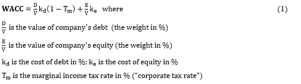

Cite as: Dmitrij Petrov (Feb. 2015). Business Valuation: Estimating Fair Value of Companies on the Example of Adobe Systems Inc., Available online, Department of Computer Science, Reutlingen University, https://dmpe.github.io/PapersAndArticles/
Disclosure: The author’s choice of this company was not arbitral because of personal interest, good knowledge of its business and market environment. However, the author does not have any relationship with the company and its stock (or at least it is not known to him).
Business Valuation: Estimating Fair Value of Companies on the Example of Adobe Systems Inc. ($ADBE)
Nowadays people know the price of everything and the value of nothing.
In the following term paper, I want to introduce my reader to the valuation of companies and their business. The paper consists of several chapters. First, I explain what value is, where it can be used and why is it important to value companies. I also write about potential danger resulting from forgetting to value value. Next, I describe Discounted Cash Flow (DCF) model, which is one of many ways to estimate true value of the firm. Through explaining DCF, I am going to perform and later analyse my own valuation of Adobe Systems Inc.
As Koller et al. (2010) write in their book, the value is a "defining dimension of measurement in a market economy" – it measures the performance of companies. When an investor invests in a firm, he has an expectation that when he sells his stake, the value of his investment had grown "by a sufficient amount" to compensate his costs and risks, thus earning him a decent return, i.e. the performance of the firm he invested in has increased.
There are five types of value: the book, break-up, liquidation, fundamental and lastly the market value [FTPress13]. About the fundamental value, I am going to write in the fourth chapter. For now, let me just summarize the remaining four of them. The book value refers to the accounting value – the value reported in the balance sheet. The break-up value "refers to the amount that could be realized if a company were split into saleable units that could be disposed of in a negotiated transaction" [FTPress13]. A recent example would be Hewlett-Packard business split, which had been analysed extensively by Aswath Damodaran [Admm14]. The next type of value is the liquidation one, which should be only used if "liquidation is likely at the end of the forecast period" [Koller10, p. 229]. It refers to "a distress sale" – i.e. such value is always lower than the book or break-up one due to the quick sale of all assets at a discount price [FTPress13]. The last value I want to mention here is the market value – simplified it is created on the public exchanges and market capitalization (share price multiple number of shares outstanding) is mostly used as its benchmark.
Valuation of a company (sometimes part of due diligence process) is done when two companies merge or one acquires another one (M&A). Additionally, it is used on every day basis for purposes of (potential) shareholders to known the right price for firm’s stock – to either sell or buy it. Moreover, Fernandez (2013) lists initial public offering (IPO) and strategic planning (e.g. selling, merging etc.) among reasons why there is a need for knowing what the company is worth. He also concludes that there are 4 key factors affecting value. It is the growth, the risk, the return (e.g. ROI/ROIC) and the interest rates. On growth, Koller et al. (2010, p. 81) write that firm "creates value only when [company’s] new customers, projects, or acquisitions generate ROIC [return on invested capital] greater than the costs of capital". Yet, acquiring new customers or creating new projects is always very hard and the risk associated with that may be very high. Thus, it may lead to value conservation or even destruction.
One can think that the value is just important for shareholders on the capital markets, who buy and sell company’s stocks and bonds. However, the opposite is true as it is essential for all stakeholders – governments, communities and citizens. The reason being is that when a company is maximising its value (in the longer term), it also creates jobs and improves environment, e.g. by stimulating local economy. Although executives would always rather prefer creating long-term sustainable revenue growth, having higher ROIC and "preserving value for decades ahead", the equity markets ("the street") favourite(s) higher earnings per share (EPS) with dividends or share buy-backs. These are all quarter-to-quarter operations, which do not create long-term value. They may be just used "as a tactic for avoiding value destruction" [Koller10, p. 29]. Thus, governments try (and they should!) support businesses to have a sustainable value in the longer term, instead of just focusing on the short term.
A balance between meeting earnings forecasts and creating long-term value must exist in the minds of all executives. Yet there still seems to be an opinion (and Graham et al. 2005 proved that by surveying 400 CFOs) that meeting analyst’s short-term earnings forecasts is more important for companies than investing on "potentially value-creating activities" such as R&D [Koller10, p. 13]. Therefore, executives often pass up opportunities to introduce new and (r)evolutionary products. This goes also for mergers and acquisitions, where the idea is founded on the premise that by combining two firms it brings synergies, improves earnings and consequently increases EPS for shareholders. However, such deals "are equally like to create or destroy value" [Koller10, p. 13].
Nevertheless, sometimes companies do not create value for their shareholders, but rather destroy it. In the last several decades, we could observe great examples of destroying value affecting the whole world. Take the recent financial crisis in 2008-2009, triggered by the spike in the interest rates and subsequent defaulting on mortgages. The story is widely known.
First, banks lent money to all kinds of different people (even to those without a solid credit rating – in the spirit of American Dream and due to Mr. Greenspan’s artificially low interest rates at the beginning of this century) to buy homes – illiquid assets. Then, banks sliced and dices subprime mortgages and packaged them into high-risk long-term securities, called collateralized debt/mortgage obligations – CDO/CMO. These have been sold to whoever willing to buy them, meaning that the initial risk of the bank could be easily passed further to other investors. It was assumed that "securitizing risky home loans made the loans valuable because it reduced the risk of the assets" [Koller10, p. 7]. This violated every common sense, since when homeowners paid their payment it went through a complex chain of parties (e.g. banks, insurance firms, special purpose entities etc.), who took many transactional fees and other costs associated with it. Thus, the whole transaction didn’t reduce any risk of lending money to people, even if rating agencies put their "AAA+++" on people’s mortgages. In contrary, it was later impossible to know who was holding which risk at a particular moment.
Because many "banks used (…) short term debt [e.g. as investors to buy those securities themselves] to fund their illiquid long term assets", it has "increased the risk of holding their equity" in the worst-case scenario [Koller10, p. 8]. As soon as the market turned against and homeowners couldn’t pay their payments, suddenly everybody saw that investors had (I) illiquid assets which in general took longer to sell (and here nobody even wanted to buy them) and (II) large amount of short-term debt, which had to be repaid sometime in the very near future. Consequently, some institutions collapsed (e.g. Lehman Brothers), others got funding from the US federal government, which bailed them out (e.g. AIG).
Authors of the book write that there have been at least six financial crisis in the past 30 years, when "companies and banks were financing illiquid assets with short-term debt" (Koller et al., 2010). Up until now, they conclude, it seems we have not learned from such mistakes.
Now, let me go back from financial markets to the value creation process and say how companies create value for their stakeholders. They do that by "by investing capital (…) to generate future cash flow at rates of return exceeding the cost of capital" [Koller10, p. 17]. If company has well-defined competitive advantage and it "increases (…) revenues and deploy[s] more capital at attractive rates of return" it creates its value faster [p. 4]. Aspects that create long-term value are many including innovative and high-quality products, brand recognition and cost & capital efficiency.
The opposite of creating value is known as conservation of value – "anything which doesn’t increase cash flows doesn’t create value" – meaning that value becomes unchanged [Koller10, p. 26]. Authors further write that the stock market is very well aware of conservation of value, therefore "executives should focus on increasing cash flows rather than finding gimmicks that merely redistribute value among investors or make reported results look better", e.g. through financial engineering. To summarize it, "the stock market isn’t easily fooled when companies undertake actions to increase reported accounting profit without increasing cash flows" [p. 28].
However, how can we see if a company creates value? And how do we decide to invest in one company and not in the other? To answer these kind of questions, we need to calculate firm’s fundamental value and in this paper I will introduce my reader a discounted cash flow method on the example of Adobe Systems Inc. (ticker $ADBE on NASDAQ).
In principle, there are many ways how can we value companies. As already described in the first chapter, there are methods based entirely on the balance sheet (e.g. book/liquidation value). Other use income statement (e.g. for establishing valuation multiples – price-to-earnings ratio, EV/EBITA etc.), investment options or cash flow discounting (DCF).
In this chapter, I am going to write about the last one – also called fundamental value – which is based on firm’s economic & business fundamentals [Fenand13, p. 4]. Basically, this method seeks to "determine the company's value by estimation the cash flows it will generate in the future and then discounting them at a discount rate [that] matches to the [cash] flow’s risk" [Fenand13, p. 17]. This method is frequently used because it is relying "solely on the flow of cash in and out of the company, rather than on accounting-based earnings", which may not reflect its true value [Koller10, p. 103].
Unfortunately, there are several approaches based on different cash flows. Fernandez (2013) lists three of them which are (I) free cash flow (FCF) using WACC as a discount rate, (II) equity cash flow (ECF) using cost of equity as a discount rate and lastly debt cash flow using cost of debt [Fernan13]. In all 3 cases, methods when applied correctly should lead to same results, however the ECF is "difficult to apply, since matching equity cash flows with the correct cost of equity is particularly challenging (…)" [Koller10, p. 104].
Most commonly used is the free cash flow, which I am also going to describe here [Dcf06]. FCF means that I am going to use a DCF model, which discounts "future income stream at the weighted average cost of capital (WACC)". Let me begin with WACC.
WACC is the "rate of return that investors expect to earn from investing in the company (…)" [Koller10, p. 40]. This is just a definition, without having a broader perspective at the term. Let me now say that assets of the company are financed either by (issuing a new) debt or by equity (e.g. stock, cash flow) [Invs12]. The above term says "how much interest the company has to pay for every dollar it finances [debt and equity]" [Invs12, Inveans15]. The WACC rate can calculated as follows [Invs12, Koller10 p. 236]:
The calculation of this rate is everything but not easy, as the reader will see on the next page, because there are many independent variables which could (but should not and will not) be taken arbitrary, e.g. based on the experience of the analyst or comparable firms. We can even show a tree to visualize steps required to calculate WACC, see figure 1. In basic terms, the rate tells us what both shareholders and debtholder can expect to get. For example, if debtholders want to get 20% of return and shareholders 50%, then the investment of our company in new products needs to return (50+20)/2 = 35% a year, on average. Thus, our WACC rate would be 35% [Invs12].
WACC is used very frequently by analysts, because it can tell whether investors (e.g. banks) should invest in a firm so that it will generate value (i.e. return) for them. For example, if the company returns 40% and its WACC rate is 35%, then "for every dollar the company invests into capital, the company is creating" 5 cents of value [Invs12]. However, if the company’s return is just 25%, then for every invested dollar, the company is destroying its value by 10 cents.
Let me know introduce our company Adobe Systems . This computer software company offers applications, which are dominant in the "creative" market (e.g. tools for video editing, designers etc.) and are used every day by millions of businesses and individuals for already more than 30 years. The company faces almost no direct completion and includes "brands" such as PDF, Flash Player or Photoshop. In addition to these so-called "Digital Media" business offering (all part of "Creative Cloud" – a subscription based service), it has also "Digital Marketing" segment, which in turn is used by marketers for Analytics, Targeting and Social.
We already know what WACC means and how it can be calculated. Thus, let me now show you Adobe’s WACC rate and compare it with its return on invested capital (RIOC) [Gf14]. First, we need to value company’s debt and equity.
Once we have both weights for equity and debt, we need to get corresponding costs. To calculate the first one, we will use Capital Assets Pricing Model. Koller (2010, p. 237) write that "cost of equity is determined by three factors: the risk-free rate of return, the market wide risk premium (…) and a risk adjustment that reflects each company’s riskiness relative to the average company". CAPM "adjusts (…) company-specific risk through the uses of beta, which measures a stock’s co-movement with the market and represents the extent to which a stock may diversify the investor’s portfolio", giving us [Koller10 p. 237]:
To conclude this semester paper, I want to say that valuation of companies is very complex subject matter, which requires deep understanding of many aspects. Although I thought that it would not be hard to evaluate Adobe based on my understanding of its business, at the end it proved to be hard to shows correct realistic calculations and interpret them correctly. My Excel file, which I have been using for this paper can be obtained here .
| [Rioc03] | "Return On Invested Capital (ROIC) Definition." Investopedia, 26 Nov. 2003. Web. 23 March 2015, http://www.investopedia.com/terms/r/returnoninvestmentcapital.asp |
|---|---|
| [Noa03] | "Non-Operating Asset Definition." Investopedia, 24 Nov. 2003. Web. 23 March 2015, http://www.investopedia.com/terms/n/nonoperatingasset.asp |
| [Morn15] | "Step 3--Discount Projected Free Cash Flows to Present." Morningstar, n.d. Web. http://news.morningstar.com/classroom2/course.asp?docId=145102&page=4&CN |
| [Admm14] | Damodaran, Aswath. "Musings on Markets: HP's Break Up: Value Enhancement, Pricing Game or Management Hype?" 30 Oct. 2014. Web. 1 Jun. 2015, http://aswathdamodaran.blogspot.de/2014/10/hps-break-up-value-enhancement-pricing.html |
| [Averk15] | Averkamp, Harold. "How Do I Calculate the After-tax Cost of Debt?" AccountingCoach.com, n.d. Web. 23 March 2015, http://www.accountingcoach.com/blog/after-tax-cost-of-debt |
| [Dcf06] | McClure, Ben. "DCF Analysis: Introduction." Investopedia, 03 Jan. 2006. Web. 23 March 2015, http://www.investopedia.com/university/dcf/ |
| [Fernan13] | Fernández, Pablo. "Company valuation methods. The most common errors in valuations." Research Paper no 449 (2007). http://ssrn.com/abstract=274973 Updated (and used) revision at http://www.iese.edu/research/pdfs/di-0449-e.pdf |
| [fig1] | Link to picture as of 23 March 2015 |
| [fig1] | Link to picture as of 23 March 2015 |
| [FTPress13] | Ferris, Kenneth, and Barbara Petitt. "Valuation for Mergers and Acquistions: An Overview." 4. Valuation Process. FT Press, 5 Aug. 2013. Web. 10 May 2015. http://www.ftpress.com/articles/article.aspx?p=2109325&seqNum=5 |
| [Gf14] | "Adobe Systems Inc (ADBE) Weighted Average Cost Of Capital (WACC)." GuruFocus, n.d. Web. 23 March 2015, http://www.gurufocus.com/term/wacc/ADBE/Weighted%2BAverage%2BCost%2BOf%2BCapital%2B%2528WACC%2529/Adobe%2BSystems%2BInc |
| [Graham05] | Graham, John R., Campbell R. Harvey, and Shiva Rajgopal. "The economic implications of corporate financial reporting." Journal of accounting and economics 40.1 (2005): 3-73. |
| [Invs12] | NA. "Weighted Average Cost Of Capital (WACC) - Complete Guide To Corporate Finance." Investopedia, 28 Mar. 2012. Web. 10 Jun. 2015. http://www.investopedia.com/walkthrough/corporate-finance/5/cost-capital/wacc.aspx |
| [Koller10] | Koller, Tim, Marc H. Goedhart, David Wessels, and Thomas E. Copeland. Valuation: Measuring and Managing the Value of Companies. Hoboken, N.J: John Wiley & Sons, 2010. Print. |
| [Sharerep] | "Share Repurchase Definition" Investopedia. N.p., 26 Nov. 2003. Web. 23 March 2015. http://www.investopedia.com/terms/s/sharerepurchase.asp |
| [Inveans15] | "Weighted Average Cost of Capital (WACC)." N.p., n.d. Web. 06 Mar. 2015. http://www.investinganswers.com/financial-dictionary/financial-statement-analysis/weighted-average-cost-capital-wacc-2905 |
{kind=link}
{kind=link}